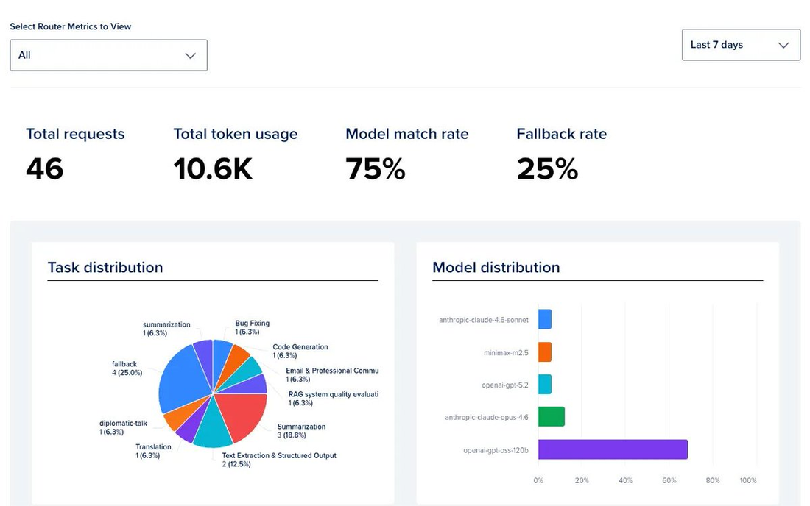
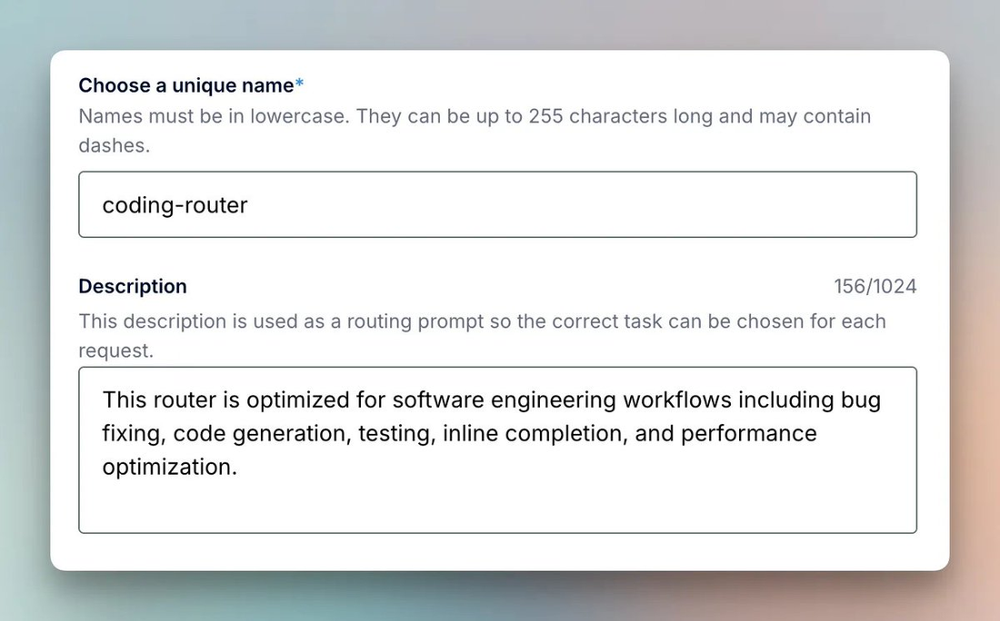
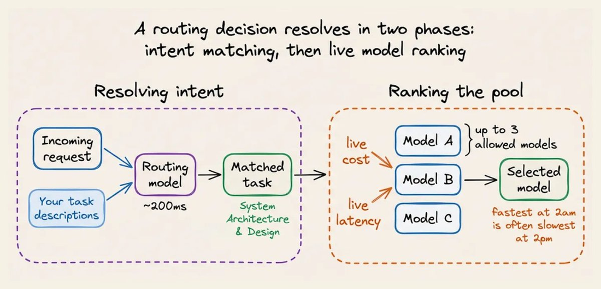
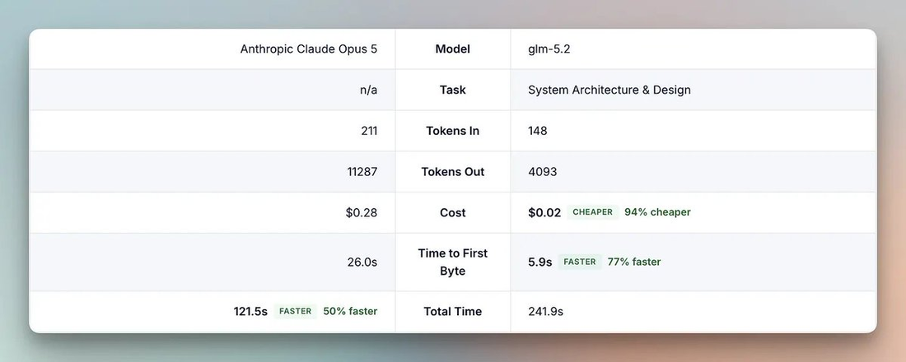
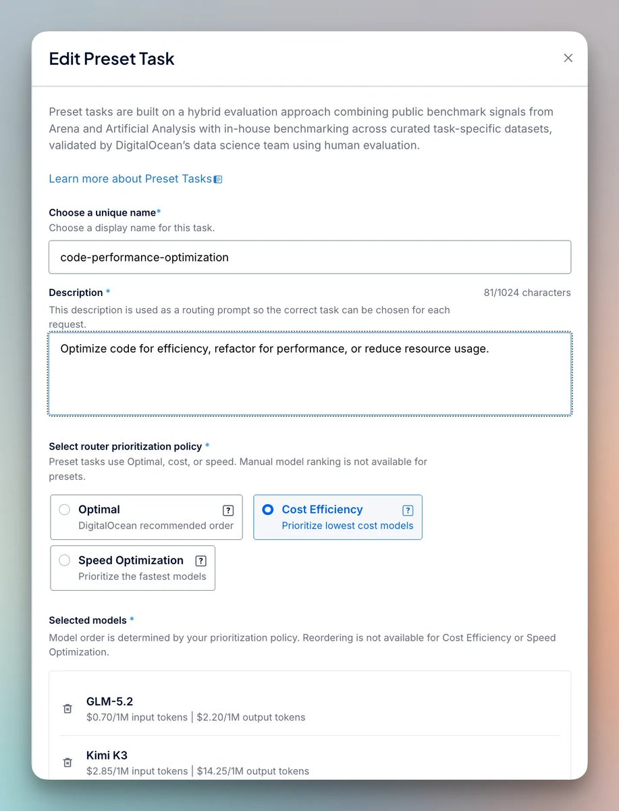
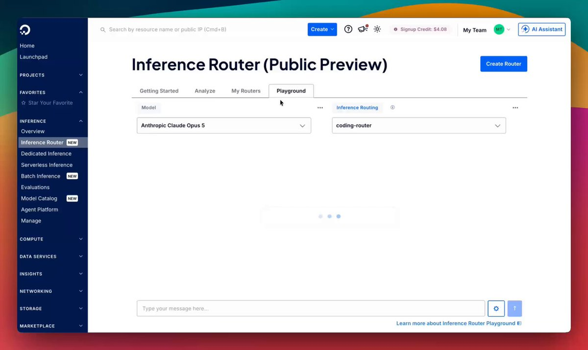
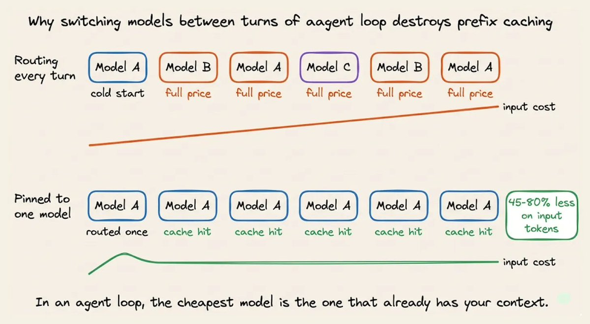
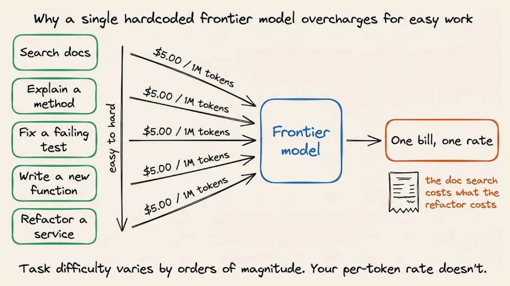
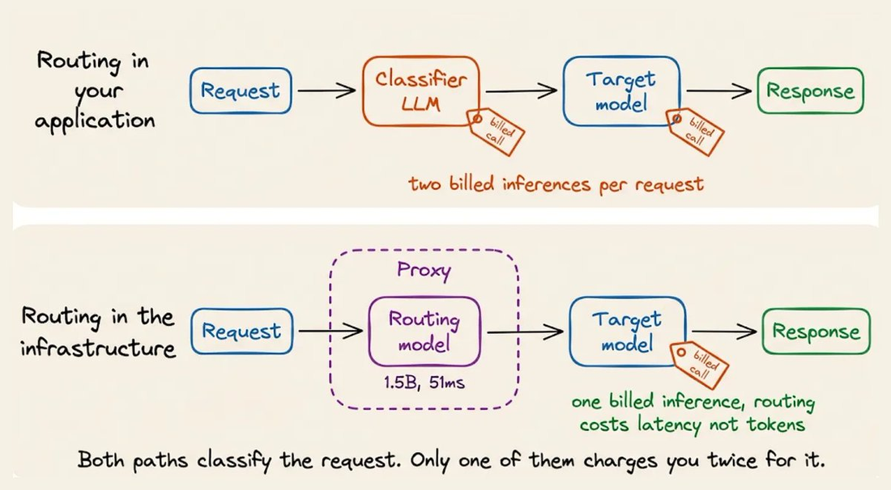
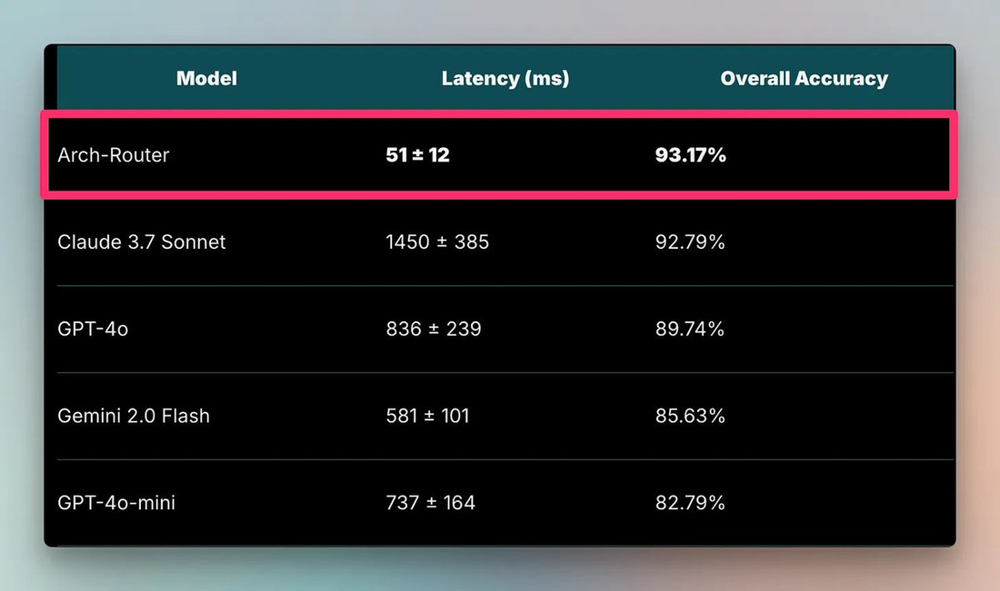

很多团队给路由画的图很简单：拿一个小模型当分类器、读一下请求就把单子分派给便宜或贵的模型。这个直觉没有错，一旦真塞进agent循环，很多朴素实现反而比不路由更烧钱。这是全文最想拆穿的一个表面正确。
问题的起点来自编码agent：它们一场会话里常常要混合处理代码阅读、函数编写、按测试修bug、解释方法、检索文档这五类难度不等的任务。谁把他们放上同一条账单模型、并按同一个单价计价，谁就会在月账单上先尝到教训。
本文会沿一条清晰的因果链讲下去：先看单一模型让账单膨胀的真实案例（Uber），再看DIY路由的四类翻车姿势，然后走入把路由做成基础设施（Plano/两阶段）的做法，最终落到agent必须靠会话固定（session pinning）守住前缀缓存红利这个关键结论。文章所有图片与代码块均按原文完整保留。
一次编码agent会话通常在同一个场子里做五类难度悬殊的事：分析代码库、写新函数、针对测试输出修bug、解释一段代码、检索文档。它们面临的算力要求完全不同，可一旦把整个会话固定到一个模型上，任何请求都会按同一个费率开出账单。

Uber在2025年12月把Claude Code铺到大约5000名工程师手里；到2026年4月底，全年的AI预算就已见底。重度用户一个月要烧500到2000美元，有位高管在单场两小时的会话里花掉1200美元。值得注意的是没有任何环节坏了：工具正被用在我本该帮大多数人提速的地方。
Uber的对策是给每个工具设1500美元/月的封顶，用“削产能”的方法去换“省钱”：这只是把症状压住，远没触碰到病根：让一段查docstring的请求和一次分布式重构按同一个价钱的，本身就是扭曲的计价模型。
同一场会话的账单之所以会暴涨，恰恰因为agent把不同难度揉进同一条对话：朴素版路由会在这条会话里一次又一次地切模型，结果每切一次都推倒上一版缓存。文章的主体，就在讲为什么会这样以及怎样修。

对症的思路很简单：把相同任务交给做得好、又最便宜的那个模型去扛。分类、抽取、排版、短摘要这类偏规则化的任务，用便宜约10倍的模型即可交回几乎一致的结果，让真正的推理负载集中在最不可缺少它的模型身上。
这个做法背后是有研究背书的。RouteLLM（ICLR 2025）用Chatbot Arena的人类偏好数据训练路由器、再在标准benchmark上验证；其打低秩/矩阵分解那一版路由器，在MT Bench上保住GPT-4 Turbo大约95% 的质量，却只把14% 的查询实际上送给了强模型：换算出来是约85% 的成本压减。
更重要的它还泛化：路由器能在根本没训练过的模型配对之间迁移，说明它不是过拟合到某一对组合。自己流量上也成立：让70% 的请求走0.10美元/百万token的廉价档，另30% 走3美元/百万token，混合单价约为0.97美元/百万：降幅明显。
用户付给成本与质量的权衡，本身是合理的取舍；做不好路由的从来不是“该不该路由”，而是路由层要承担起分派与维护的全部责任，多数团队因此宁可写死一个模型。

若还是想自己动手把路由器做进应用，原文的提醒很实在，四个点几乎是你必会踩中的：
最直白的做法是前面挂一个小LLM做意图分类。于是一次正常请求要先为分类付一次、再为真实生成付一次。分类器再便宜，也是每个请求上多出来的一笔固定税：只有当分类器的价格远低于模型里的档次价差、且它足够准，你才有望买到这个“便宜”。
用户说得越短，越考验上下文。像 “fix this”、“make it faster” 这类指令离开会话历史根本没法判断意图。通用模型没有被训练成“对照一组路由定义去判意图”的角色，让它临场扮演分类器，在编码这类意图最含糊的负载上尤其脆弱。
每次加一个新模型、给一个任务改名或调一次价，就是在没有任何评估护栏的情况下动手改路由代码。而路由改动会不会悄悄让结果变差，常常要等用户真在线上提交一个bug才看得出来：没有信号能提前拉住你。
这是专属agent、也最容易被忽略的一处。各家provider会对高度重叠的prompt前缀做KV缓存，同样一段token序列再命中同一模型时直接复用，只按极低折扣计费。可一旦中途换到另一个模型，它对当前会话毫无缓存，于是这部分重复前缀每次都掉到全价重算的水平。
这四点有个共同的根：路由逻辑长在你的应用里，你就得把所有判断、维护和缓存责任都压在自家背上。把它收进基础设施，正是下一节的解法方向。

DigitalOcean的Inference Router把以上根治做在另一个层次：你不必亲自维护分类器与所有分支，只需要用自然语言写清“你有哪些任务、每类任务允许由哪几个模型来服务”，剩下每个真实请求该落在哪个模型上，全部交平台决定。
承担判定的是Plano，一个开源、面向AI的原生代理。每次路由决策分成两个阶段：先是意图解析（把请求归使命题的一项任务），再是对候选模型做排序。下面配图为整条链路的概览。

第一阶段由一个小模型读完整个对话、匹配到我们对任务的自然语言描述、并返回一条路由结论。若觉得“这不凭空多付了一次分类”，注意这里的分水岭在谁在做这件事。
Katanemo的第一代路由模型Arch-Router方向非常收敛：只有1.5B，唯一要做的是读对话、拿它跟路由描述比对、输出JSON。结果却是：它在路由准确率上压过Claude 3.7 Sonnet，同时跑得快28倍：因为路由本身不要求作者模式、不调用工具、不需要长链推理，小模型已能cover整件事。
这段在代理内部完成，而非外挂在每次API调用旁的单独阶梯计费：带来的代价仅是多约200ms延迟，而不是账单上又多个独立条目。

现在线上跑的是Plano-Orchestrator，它专攻更难的会话形态：含糊的追问、会话中途的跑题、以及某些本就不该被路由的消息。在对整体路由质量的对比上，它小幅超过GPT-5.1与Claude Sonnet 4.5，领先最大的一段在编码：也就是意图最含糊的地方。
“修这个”“再试一把”，若离开它们背后的那串对话，任何一条都是哑谜。在编码这类场景，让一个针对该模式训练过的小模型来读，比把一个通用模型当成临时法官要可靠得多。
把任务收窄到候选池（通常最多3个模型）还不够，你还得在池里挑出队首。如果只是把配置排一遍序后永远取第一条，多半撑不久：同一家provider的延迟一天之内能按负载抖2到3倍，凌晨最快的那块到了下午往往变最慢；价格在变、延迟在漂、配额也在挪，上个月的config描述的已经不存在的世界。
因此每一次都在实时算：路由引擎从DigitalOcean定价API拉当前成本、从Prometheus拉延迟，再按这只router绑定的策略做排序。Cost Efficiency按token单价、Speed Optimization按首token时间、Manual Ranking原样保留手工顺序、Optimal直接采用DO跑基准得出的默认。这些指标写进内存缓存并不断由后台循环刷新，让真实请求那一刻几乎零延迟。
每条router还配了fallback：当被选中的模型不可用/被限流/掉线，就按策略让到一个候选；都不行才落到你自己配置的兜底清单。
以上把每笔请求当作并行的独立探询来讨论：偏偏agent不这样转。如今几乎不再有正经业务跑单轮：一名编码agent要读文件、调工具、对部分结果做推理、接着写码并自查，每一步都压在前面所有步骤之上。这就是agent循环的全部存在意义。
这种结构给路由画了一条新分隔线：它在便宜与质量之间找平衡，可一旦把它做成“每轮意图一变就换模型”，就亲手把前缀缓存逐条值回全价。以下两个小节把“为什么普通路由在agent里打不过不路由”讲清楚。

每一次LLM API调用都是无状态的，provider不记得你的上一轮，所以agent每回合都得把整段历史重新翻译一遍。它的物理救星是prefix KV cache：只要本次请求以provider已经处理过的一段token开头，就直接复用缓存里的attention，而不重新算。命中缓存的部分只按正常输入价约10% 计费。
回头看15轮编码回来攒下的session：系统提示、schema、文件与这段推理逐次累积，到后面几轮，你实际送出去的内容里有差不多90% 都是provider早就见过的字符串。而这正是前缀缓存眼里最理想的场景：几乎整块输入都能只付一成钱。
把路由做成“每回合逐意裁决后可能切人”，就会被前缀缓存反向惩罚：第3轮是写码，被分到模型A；走到第4轮又遇上一个new bug fix，router想把你切到模型B：可B对这段对话完全是第一次见，A身上那一串已经累积好的缓存前缀全部作废，于是那约5万个token又会重新走到按全价输入计算的排队里。
结果是一口气折三处：成本：15轮里有90% 是命中缓存前缀，本可省45% 到80% 的input token费用，切一次模型这些优惠归零并每轮全价；行为一致性：不同模型输出风格、工具调用格式不同，中途换人可能直接打破agent的解析；连贯性：推理脉络交给一个思考与格式都不同的模型，一段好思路也可能因此被削掉棱角。
解法把两件事分开：一次会话只在最开头做一次真正的路由决定，然后把这场会话里所有后续请求都固定到所选的同一个模型上。DigitalOcean落地方便是X-Model-Affinity头配合一个会话ID：router仅于首请求做一次判定，此后的请求带上同一affinity ID就直接给出pinned:true并返回同一个模型；于是你只为这一次路由少付一次钱，后续每轮却继续享用它应得的缓存红利。
照上面这条因果，就不难理解为什么这篇文章题目会写“做不好路由的agent，可能比不路由更烧钱”：不是路由原理错了，而是把路由频率设成每回合都裁决的agent，等于在缓存这条线上自己把自己逼回全价。下面贴一段原文就是这么调用一个router的样子。
curl --location 'https://inference.do-ai.run/v1/chat/completions' \
-H "Authorization: Bearer $MODEL_ACCESS_KEY" \
-H "X-Model-Affinity: session-001" \
-d '{
"model": "router:test-router",
"messages": [
{"role": "user", "content": "Write a Python function for binary search"}
]
}'生产要真用起来，DigitalOcean还造了一层很轻的体验：预设router（Preset routers）覆盖Software-Engineering / General、Writing以及长文档 / RAG四组，是上手最快的方式。每一步几乎都有一张SDK/UI界面在铺底。
起名并给一段描述是第一步，但其实：那行description会被当成它的路由prompt用，是模型判“这条请求该划给哪一类任务”的关键输入，给得越具体、越靠近名词，路由越稳。

下一步是“加任务”：一部router本质上是一台“任务集 + fallback”。每一任务都由一段描述 + 一组允许服务它的模型池构成。预制组里有Coding & Development（Bug Fixing / Code Generation / Performance Optimization / System Architecture & Design），还有General（summarization / extraction / translation / classification）以及面向长文档问答、RAG评测的Knowledge-Base组；也可以完全自定义。
自定义更自由：给名字、给路由描述、给模型池与所绑策略（Cost Efficiency / Speed Optimization / Manual Ranking）。描述需要时时修，因为路由模型就是拿着它去匹配意图的。

真正选模型时，界面上会直接列出现价，把“差多少”摊在眼前：目录同一侧最低的是DeepSeek V4 Flash的 $0.08 / 百万input token，最贵的是Claude Opus 5的 $5.00 ：差了62倍，而这个裂口本身就是路由能回本的来源。
Playground把router编好线时，主打的不是背benchmark，而是把你的路由与单个模型并排丢给同一条真实prompt看差距。原文给的一题是“为一个Postgres + Kafka的配置设计事务型outbox模式，要给出schema、轮询发布者与幂等”。右手的coding-router把这道题匹配到System Architecture & Design后转给glm-5.2；两路的答案都完整又正确。结账时它比一路直接调Opus 5便宜94%、首字节快77%。
流量起来后还要盯两个面板：Analyze页给match rate / fallback rate，fallback一旦高企，多半是你任务：描述还是写糊了；Router Evaluation则让你把router丢给一份自己上传的数据集，用LLM-as-judge按“完整性 / 正确性”打分，是上线前给路由配置背书的正规做法。

做完路由这一整套，文章在最后一节收线：token单价在降，被agent消耗的token却涨得更快，Gartner估agentic工作流单任务的token是普通聊天的5到30倍。用封顶去控，削的是能力；用路由去控，是把每笔请求配到既够用又不至于让它坐到它坐不动的椅子上：从而既不丢能力、也不乱花钱。
而真正能一直自建的，不是做路由本身，而是它的三个零件：能胜过前沿模型的意图路由模型、能反映当下条件而非上个月配置的排序、以及让agent整场钉在同一模型上的会话固定。最后那句最值得带走：别再问“路由到底有没有用”，问自己手里还有多高比例的流量，这些年其实一直在替一个过贵的模型垫账。
参考：